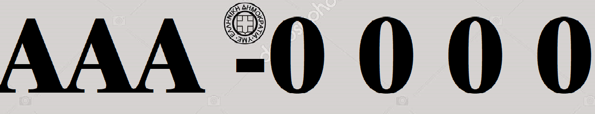

Πατήστε 'Φόρτωση Εικόνας' για να φορτώσετε την φωτογραφία σας. Σε αυτό το σημείο Θα σας ζητηθεί να την αποκόψετε. Σιγουρευτείτε ότι η αποκοπή έγινε σύμφωνα με τις οδηγίες και έπειτα πατήστε 'Μεταφόρτωση'.
Αφού επιλέξετε τη φωτογραφία θα σας ζητηθεί να την αποκόψετε. Για να θεωρηθεί σωστή η αποκοπή θα πρέπει στην φωτογραφία να φαίνονται μόνο οι χαρακτήρες και οι αριθμοί της πινακίδας κυκλοφορίας. Τυχόν αυτοκόλλητα και βίδες που φαίνονται δε δημιουργούν πρόβλημα. Οι χαρακτήρες και οι αριθμοί θα πρέπει να είναι όσο το δυνατόν πιο ευδιάκριτοι.
Μη αποδεκτό
Αποδεκτό
